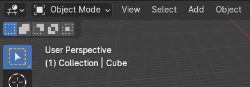

First steps in the user interface¶
Hint
A lot of new concepts and UI elements will be introduced in the upcoming videos. It probably works best to watch video(s) limited to a certain topic, try the operations shown and corresponding exercise(s) in Blender yourself, before moving on to the next topic.
Starting Blender¶
In general Blender isn't different to start than any other GUI application.
However, warning and error messages will be printed to the console window. It depends on the operating system you're working on how the console window is available:
- (All operating systems) If you start Blender from a terminal window, e.g. xterm or Windows Command window, then Blender output will be printed in that window
- (Windows only) If Blender was started from the Start menu, or using a desktop icon, then you can toggle the associated
console window using the
Window > Toggle System Consoleoption
See this section in the Blender manual for more details on starting Blender from the command line and details specific for each operating system.
User interface fundamentals¶
We will go over fundamentals of the user interface in terms of interaction and areas, specifically the 3D view and Outliner. We also touch on a number of often-performed operations, such as rendering an image and changing the set of selected objects. We also look a bit closer into keyboard shortcuts and menus.
It's probably best to follow along in Blender on your own system while viewing the video. The files
used in the video can be found under data/blender_basics.
Slow 3D interaction
If the interaction in the 3D view isn't smooth (as seen in the video) on your PC/laptop something might be wrong in the setup of your system. Please contact us if this appears to be the case.
Accidental 'Edit mode'
If the 3D view (or some of the other areas) suddenly appear to behave strangely, or you now
see your mesh with all kinds of dots or lines then you might have accidentally entered the so-called
"Edit Mode" or any of the other modes available (Tab and Ctrl-Tab are used for this).
Check the menu in the upper left of the 3D view, which should read Object Mode:

In this course we will use only Object Mode (and briefly use Vertex Paint mode
in one of the exercises). You can use the drop-down menu shown above (or the Ctrl-Tab menu in the 3D view) and
pick Object Mode to get back to the correct mode.
Accidental workspace switch
Another thing that might happen is that you accidentally click one of the tabs at the top of the screen, which then
completely changes the layout of your user interface. These tabs are used to switch between workspaces, where each workspace
allows a different layout to focus on a certain task (e.g. 3D modeling, versus shader editing, versus animation).
The default workspace is Layout and you might have to switch back to that one:

Some user interface tips¶
- To bring up the relevant section of the official Blender manual for (almost) any user interface element, e.g. button, setting or menu,
right-clickon that element and clickOnline Manual. This will start a web browser showing the relevant manual page.
- You can hover with the mouse over pretty much any UI element to get a tooltip with a short description, including shortcut key(s) if available.
- The keyboard and mouse shortcuts for object selection, editing, view interaction, etc work mostly the
same in all Blender editors. So
Gto grab,Xto delete,LMBto select,Shift-MMBto translate,Wheelto zoom, etc.
- The mouse controls the current area in focus and any keyboard actions are applied in the active area first.
- You can maximize a user interface area by using
Ctrl+Spacebarhaving the mouse in the area you want to maximize. This can sometimes be useful to temporarily get a larger area to work with. You can use the same shortcut to toggle the area back to its original size, or use theBack to Previousbutton at the top of the screen.
Changes to default preference settings¶
Here we suggest some preferences settings to change from their default value.
Optional
It's not required to change these defaults, but we find they help us in working with Blender, and so might be useful for you as well
Under Edit > Preferences, in the Interface tab:
- Under
DisplaydisableSplash Screen. This will save you a click to get rid of the splash screen each time you start Blender. If you ever want to look at the splash again you can use the Blender logo icon in the top-level of the window and useSplash Screen. - Under
Editors > Status BarenableScene Statistics,System MemoryandVideo Memory. This will show extra scene statistics in the status bar. Another way to do this is to right-click on the status bar and enable the same options. - Under
Editors > Temporary EditorssetRender IntoImage Editor. This will cause the rendered image to be displayed as a replacement of the 3D view, instead of in a separate window. After rendering pressEscapeto get back the 3D view that was replaced by the rendered output. - In case you find that Blender's user interface elements, such as buttons or menu text, are too small you can scale up the UI with a single
setting under
Display > Resolution Scale. If you change the value you can see the changes in the UI immediately.
Orbit around selection
Another option which you might consider enabling is Orbit Around Selection. By default this is turned off and in that mode any rotation of the 3D viewport will be around the center of the view, which might cause selected objects to go out of view. When the option is turned on viewport rotation will be around the selected object(s), always keeping them in view. You can find this option on the Navigation tab under Orbit & Pan.